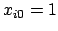
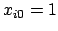

Now, let
 be a column vector of length
be a column vector of length  where each element is a random variable representing the number of successes of
where each element is a random variable representing the number of successes of  for population . Let the column vector
for population . Let the column vector
 contain elements
contain elements  representing the observed counts of the number of successes for each population. Let
be a column vector also of length
representing the observed counts of the number of successes for each population. Let
be a column vector also of length  with elements
with elements  =
, i.e., the probability of success for any given observation in the
=
, i.e., the probability of success for any given observation in the  population.
population.
The linear component of the model contains the design matrix and the vector of parameters to be estimated. The design matrix of independent variables,
, is composed of  rows and
rows and  columns, where
columns, where  is the number of independent variables specified in the model. For each row of the design matrix, the first element
. This is the intercept or the ``alpha.'' The parameter vector,
is the number of independent variables specified in the model. For each row of the design matrix, the first element
. This is the intercept or the ``alpha.'' The parameter vector,
 , is a column vector of length
, is a column vector of length  . There is one parameter corresponding to each of the
. There is one parameter corresponding to each of the  columns of independent variable settings in
, plus one, , for the intercept.
columns of independent variable settings in
, plus one, , for the intercept.
The logistic regression model equates the logit transform, the log-odds of the probability of a success, to the linear component: